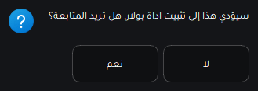
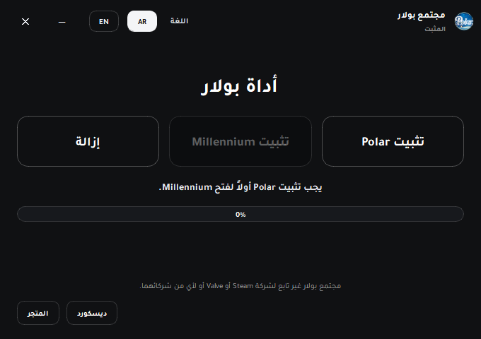
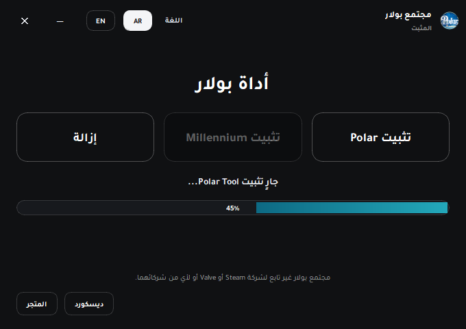
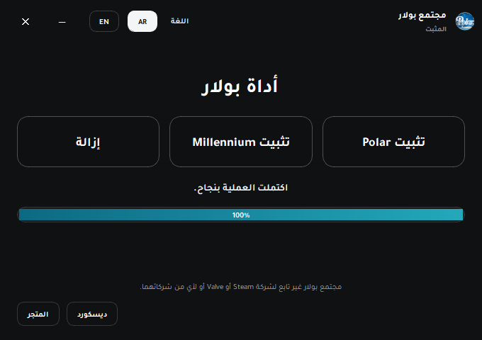
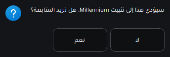
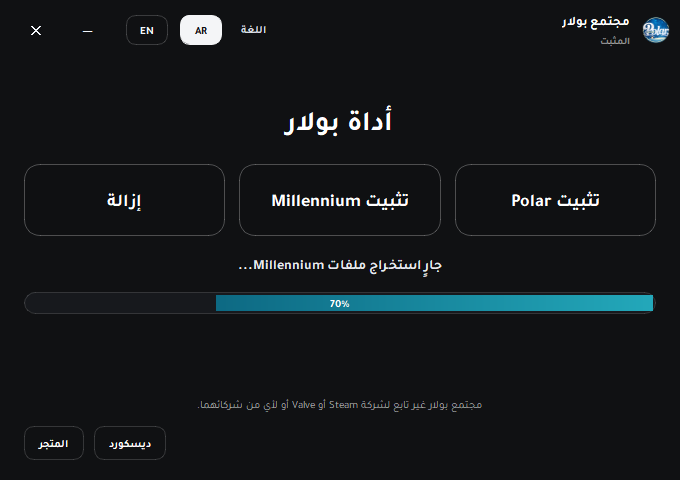
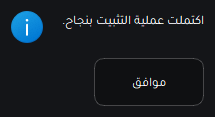
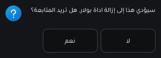
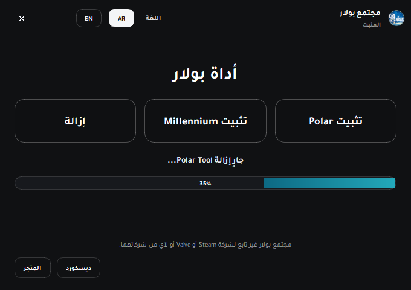

تأكيد العملية
قبل البدء، يظهر مربع تأكيد للمستخدم لضمان تنفيذ الخطوة بإرادته.
واجهة مكتبية عربية حديثة لتثبيت Polar و Millennium وإدارتها بسهولة، مع نوافذ مخصصة، شريط تقدم واضح، وتجربة استخدام مباشرة للمستخدم.

يعرض اسم التطبيق، الشعار، خيارات اللغة، وأزرار الإغلاق والتصغير داخل نفس لغة التصميم.
يتضمن التطبيق أزرار تثبيت Polar وتثبيت Millennium والإزالة، مع إبقاء الحالات واضحة للمستخدم.
يوضح المرحلة الحالية من التثبيت أو الإزالة بشكل مباشر وسهل القراءة.
الوصول إلى المتجر أو ديسكورد من داخل الواجهة نفسها.

قبل البدء، يظهر مربع تأكيد للمستخدم لضمان تنفيذ الخطوة بإرادته.

بعد الموافقة، يبدأ التطبيق بعرض تقدم تثبيت Polar مع وصف مباشر للمرحلة الحالية.

لا يتم تفعيل Millennium إلا بعد اكتمال تثبيت Polar بنجاح، مما يضمن التسلسل الصحيح.

يعرض التطبيق نافذة تأكيد مستقلة قبل بدء تثبيت Millennium.

يظهر شريط التقدم وحالة التنفيذ أثناء جلب الملفات وفكها والتحقق منها.

بعد الانتهاء، تظهر نافذة نجاح مخصصة تؤكد للمستخدم أن العملية تمت بالشكل المطلوب.

يحصل المستخدم على رسالة تأكيد قبل بدء حذف الملفات المرتبطة.

يعرض التطبيق تقدم الإزالة ثم يقوم بفتح Steam تلقائياً بعد الانتهاء إذا كان الملف التنفيذي موجوداً.
تعرض جميع المراحل الأساسية بشكل واضح، مع دعم كامل للتبديل بين العربية والإنجليزية.
العمليات الأساسية كلها متاحة من شاشة واحدة: تثبيت Polar، تثبيت Millennium، والإزالة.
شريط التقدم ورسائل الحالة والنوافذ المخصصة تساعد المستخدم على معرفة ما يحدث في كل لحظة.